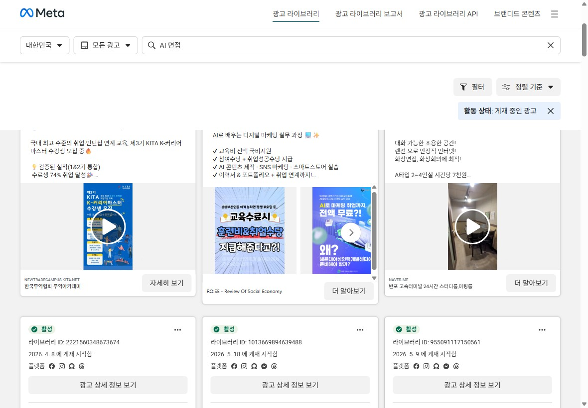

AI 모의면접 어센트가 가장 먼저 잡을 사람은 — 경쟁사도 ChatGPT도 안 챙긴 '개발 직무, 첫 실전 면접이 막막한 취준생'. 코드잇만의 강점으로 이들을 잡는 페르소나·USP·런칭 캠페인을 제안합니다.
※ 발표는 위 순서대로 진행하고, 각 장 위에 Q1·Q2 배지로 어느 과제 답인지 바로 보이게 했습니다.
대기업 AI 역량검사의 표준(450개사). 취준생 82%가 경험 — 단, 기업이 채용에 쓰는 '검사 통과'용.
기업이 도입하는 AI 영상면접이라, 회사가 시켜서 보는 경우에 가깝습니다.
모의면접은 '부가 기능'일 뿐입니다. 자소서·공고가 중심이고 면접은 곁다리예요.
가장 큰 위협. 하지만 진짜 면접 환경도, 표정 분석도, 기업별 질문도, 결과 리포트도 없는 텍스트 연습일 뿐입니다.
출처 · 마이다스인 보도(AI역량검사 450개사·취준생 82% 경험), 제네시스랩 뷰인터, 사람인·면접왕 서비스 페이지. ※ 공개자료.
인적성·게임형 검사를 통과하는 게 목적이라, 실제 대화 면접과는 결이 다릅니다.
회사가 시켜서 보는 영상면접 대비라 두루뭉술하고 수동적입니다.
'누구나'를 노리다 보니 누구에게도 딱 맞지 않습니다. 특히 개발 직무 깊이가 없고요.
비어 있는 자리 — "코드는 짰는데 면접은 처음인 개발 직무 취준생"을 콕 집어 챙기는 곳이 없습니다.
바로 코드잇이 가장 잘 알고, 가장 많이 가진 고객입니다.
'코드잇이 만든 개발 면접'이라는 직무 전문성과 신뢰는 두루뭉술한 경쟁사에는 없는 무기입니다.
부트캠프·강의 수강생이 곧 개발 취준생이라, 광고 없이도 가장 싸게 데려올 수 있습니다.
ChatGPT가 못 주는 실제 환경·표정·꼬리질문·리포트로 '개발 실전'을 정확히 겨냥합니다.
경쟁사의 '대기업 공채생'을 정면으로 빼앗기보다, 아무도 안 챙긴 '개발 직무 실전' 고객을 코드잇 강점으로 먼저 잡고 거기서 넓혀갑니다.
부트캠프·전공·독학으로 개발/데이터/AI 실력은 쌓았지만, 기술+인성+꼬리질문이 섞인 실전 면접은 거의 처음인 20대 후반~30대 초 신입·이직 준비생.
부트캠프·강의 수강생이 곧 이 사람이고, 수료가 곧 취업 시점이라 자연스럽게 이어집니다.
개발 실전 면접에 특화된 강자가 없습니다. 취업과 바로 연결돼 1.5만원 결제 문턱도 낮고요.
개발에서 믿음을 쌓아 전 직무·채용 플랫폼으로 넓혀갈 수 있습니다(어센트의 큰 그림과도 맞습니다).
준비한 답 뒤에 "왜요? 그래서요?"가 이어지면 머릿속이 하얘진다.
반응이 없으면 "내가 못하나?" 싶어 위축되고, 목소리도 답도 무너집니다. 결과를 가장 크게 좌우하는 순간이죠.
그 자리에서 침착하게 대처하는 힘이 진짜 실력으로 보입니다.
"침착함이 절반"이라지만, 한 번도 안 겪어보면 절대 안 침착해집니다.
그래서 어센트는 '질문 연습'이 아니라 '말리는 순간을 미리 겪는 연습'이어야 합니다.
출처 · 링커리어·슈퍼루키·하이잡 등 면접 가이드(꼬리질문·압박·면접관 태도에 가장 많이 당황). ※ 공개자료.
삼성·네이버·카카오·토스에 개발 직무까지 그대로. 맥락 없는 ChatGPT와는 차원이 다릅니다.
무표정·끄덕임·압박을 진짜처럼 보여줘 '눈치에 안 흔들리는 연습'. (제안 강화 포인트)
내 표정·시선·말투를 봐주고, 꼬리질문·점수·고칠 점까지 짚어줍니다. '연습'이 아니라 '코칭'인 셈이죠.
IT 교육 1위가 만든 개발 직무 면접.
핵심 약속 — "면접관이 무표정해도 안 흔들리게. 진짜 같은 면접을 미리 겪고, 표정까지 코칭받아 합격하세요."
가장 아픈 지점(첫 실전·면접관 눈치)을 정면으로.
공짜로 대신 쓰는 ChatGPT와 뭐가 다른지 한 줄로.
코드잇 맥락 + 부담 없는 무료 시작.
말투는 코드잇 보이스("5분마다 인생이 바뀐다")처럼 — 가볍게 시작하고, 결과로 보여준다.

출처 · 스픽 공식 유튜브 캠페인 영상, Meta 광고 라이브러리(2026.06). 영상은 누르면 재생됩니다.
"내가 실전에서 뭘 못하는지 처음 봤다." 리포트가 '몰랐던 약점'을 눈앞에 보여줘 결제 욕구를 만든다.
점수가 오르는 걸 게임처럼 보여주고, 기업·직무도 다양해 한 번 쓰고 끝나지 않습니다.
무료로 약점을 깨닫고, 유료로 보완하고, 점수가 오르면 또 도전합니다. 합격할 때까지 반복 결제로 자연스럽게 이어지죠.
핵심 — 무료는 '맛보기'가 아니라 '내 약점을 처음 마주하는 순간(WOW)'. 이 자각이 곧 첫 결제의 방아쇠가 됩니다.
전략은 가진 고객으로 비용을 낮추고, 신규로 판을 키우는 것. 둘 다 '무료 1번 → 리포트 WOW'로 첫 경험을 만듭니다.
누가 우리 수강생(딱 그 사람) · 단계 결제 직전 · 특성 광고비가 거의 안 들고 바로 닿습니다.
누가 면접·취업 영상 보는 사람 · 단계 관심 만들기 · 특성 실제 화면을 보여주기 좋고, 적은 비용으로 많이 닿습니다.
누가 '개발자 면접 준비' 검색하는 사람 · 단계 바로 결제로 · 특성 지금 당장 필요한 사람을 잡습니다.
누가 취준생 모인 곳 · 단계 비교·신뢰 · 특성 또래 후기가 잘 통합니다.
운영 방향 · 소재=실제 면접 화면·리포트 + 합격 후기 / 타겟=면접·취업·개발 관심 + 수강생과 비슷한 사람 찾기유사 타겟(Lookalike) · 기존 고객과 닮은 새 잠재고객을 자동으로 찾아 보여주는 광고 방식. / 형식=세로 숏폼·리포트 뜯어보기 카드 / 빈도=주 2~3개 새 소재, 잘 되는 건 키우고 2주마다 새로.
수강생을 잇기만 해도 광고비 거의 없이 가입과 첫 경험을 만들 수 있어, 전체 비용이 내려갑니다.
광고비를 획득비용고객 획득 비용(CAC) · 새 고객 1명 데려오는 데 드는 평균 광고비.으로 나누면 새 가입 수가 나옵니다.
가입만 늘리는 게 아니라, 무료 면접을 끝까지 해보게(WOW) 만들면 결제가 몇 배로 커집니다.
※ 퍼널 %는 구조를 보여주는 예시 숫자 — 실제는 런칭 후 데이터로 보정. 추가 구매 약 1.5만원 기준.
제일 중요한 단 하나 = 유료 크레딧을 결제한 사람 수 (과제 목표인 '가입 + 결제'를 한 번에 보는 숫자).
판단 = 이 숫자들이 목표만큼 나오면 잘되는 채널·소재를 키우고, 안 나오면 빠르게 멈추고 바꾼다. (작게 시도하고 빨리 배우기)
아무도 안 챙긴 '개발 직무 첫 실전' 취준생을 코드잇 강점으로 먼저 잡고, '면접관 표정까지 진짜 같은 면접'을 스픽처럼 와닿는 메시지로 전하며, 무료 1번의 WOW로 결제를 만들고 가진 고객(싸게)·신규(넓게)로 키우겠습니다.